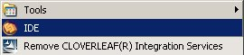
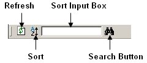
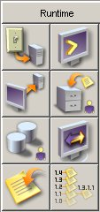

Einführung in das IDE (Integrated Development Environment)
Sie können das IDE (Integrated Development Environment) über das Icon auf dem Desktop oder über das Windows Startmenü aufrufen.
Start / Programs / CLOVERLEAF® Ingetration
Suite…. / IDE.

Alle Cloverleaf® Integration Services Tools werden vom IDE aufgerufen. Das IDE beinhaltet alle Tools die für die Schnittstelleneinrichtung, Konfiguration und Überwachung benötigt werden.

|
Title Bar |
In der Titelleiste werden das Tool (wenn gestartet) und der Name der aktuellen Datei angezeigt. |
|
Menu Bar |
Die Menüleiste enthält die jeweils verfügbaren Menüs und Menüoptionen in Abhängigkeit des jeweiligen Tools. |
|
Toolbar |
Die Symbolleiste enthält die jeweils verfügbaren Werkzeuge in Abhängigkeit des jeweiligen Tool. |
|
Status Bar |
Die Statusleiste zeigt die aktuelle Site und CLOVERLEAF® Version an. Per Mausklick auf das Quovadx Logo erscheinen Supportinformation sowie Client- und Serverinformationen. |
|
Launch Bar |
Über die Navigationsleiste (mit der Headline „Tools“) können die Konfigurations-, Test- und Überwachungstools aufgerufen werden. |
|
Site Manager |
Über den Site Manager können die Konfigurationsdateien aufgerufen werden. Das jeweilige Tool wird automatisch geladen. |
|
Tool Panel |
Das Tool Panel ist der eigentliche Arbeitsbereich. Hier werden mit Reitertechnik die jeweils aufgerufen Tools angezeigt. Ein Wechsel zwischen verschiedenen Tools ist durch Klick auf den entsprechenden Reiter möglich. |
Die Menüleiste
Die Menüleiste setzt sich aus Standardmenüs, die immer verfügbar sind und optionale Menüs, die variable und abhängig sind vom jeweiligen Tool, zusammen. Die Standardmenüs beinhalten größtenteils bei jedem ausgewählten Tool die gleichen Funktionen. Deaktivierte Funktionen werden hellgrau dargestellt. Nachfolgend eine Aufstellung der abrufbaren Funktionen aus der Menüleiste (teilweise nur aufrufbar wenn ein Tool gestartet wurde).
File - Menü
|
Menüeintrag |
Funktion |
|
New |
Erstellen einer neuen Konfiguration. |
|
Open |
Öffnen einer bestehenden Konfiguration. |
|
Save |
Speichern der aktuellen Datei. |
|
Save as |
Speichern der aktuellen Datei mit Eingabemöglichkeit eines Datenamens. |
|
Test |
Öffnet das Testing Tool. |
|
Close |
Schließt die Datei und den Configurator. Alternativ mit der rechten Maustaste auf den Configurator Tab klicken und Close auswählen. |
|
File Transfer |
Kopieren eines Testfiles auf den CLOVERLEAF® Server. |
|
Log Off & Exit |
Beendet das CLOVERLEAF® GUI mit gleichzeitigem ausloggen vom CLOVERLEAF® Sercurity Server (nur aktiv ab Basic Security). |
|
Exit |
Verlassen des CLOVERLEAF® GUIs. |
Edit - Menü
|
Menüeintrag |
Funktion |
|
Copy |
Kopieren des ausgewählten Elements. |
|
Cut |
Ausschneiden des ausgewählten Elements. |
|
Paste Before |
Einfügen des kopierten oder ausgeschnittenen Elements vor dem aktuell gewählten Element. |
|
Paste After |
Einfügen des kopierten oder ausgeschnittenen Elements nach dem aktuell gewählten Element. |
|
Delete |
Löschen des derzeit ausgewählten Elements. |
View - Menü
|
Menüeintrag |
Funktion |
|
Launch Bar |
Aktivierung / Deaktivierung der Launch Bar. |
|
Site Manager |
Aktivierung / Deaktivierung des Site Managers. |
Options - Menü
|
Menüeintrag |
Funktion |
|
Client Options |
Einstellen des Aussehens und der Arbeitsweise des CLOVERLEAF® Clients. Der Menüpunkt Client Options enthält weitere Menüpunkte, die über Aktenreiter aufgerufen werden können. Eine detaillierte Beschreibung finden Sie im CLOVERLEAF® UserGuide Teil 1. Über den Menüpunkt 'Font Size' auf dem Aktenreiter 'General' kann die Schriftgröße in den CLOVERLEAF® GUIs angepasst werden. |
|
Site Options |
Einstellen der Site-spezifischen Optionen (Farbe und Größe der Farblinie unter der Statuszeile). |
Server - Menü
|
Menüeintrag |
Funktion |
|
Show |
Anzeige der aktuellen Umgebung (Host, Root, Site). |
|
Change |
Wechsel zwischen den Sites, ggf. zwischen dem localen Config Server und dem Remote Config Server. Alle offenen GUIs werden geschlossen. |
Help - Menü
|
Menüeintrag |
Funktion |
|
Content |
Aufruf der CLOVERLEAF® Onlinehilfe |
|
Support |
Aufruf der CLOVERLEAF® "Customer Support Informationen" |
Der Site Manager
Der Site Manager zeigt alle Konfigurationsdateien der aktuellen Site an. Durch Doppelklick auf die jeweilige Datei wird diese zusammen mit dem benötigten Configurator in das Tool Panel geladen und kann bearbeitet werden. Der Site Manager kann mit einem Klick auf das X rechts oben, innerhalb des Site Managers oder über deaktivieren der Option im Menü View geschlossen werden.
Die Toolbar des Site Managers enthält folgende Funktionen:

|
Refresh |
Der Inhalt des Site Managers wird aktualisiert. Diese Funktion wird benötigt, wenn Konfigurationsdateien in Verzeichnisse kopiert werden. |
|
Sort |
Die Anzeige kann aufsteigend bzw. absteigend sortiert werden. Beim Öffnen des IDEs ist die Anzeige standardmäßig absteigend sortiert. |
|
Search |
Die Suche ist case sensitiv. |
Die Launch Bar
Die Launch Bar enthält alle Werkzeuge die zur Einrichtung und Konfiguration, zum Testen und zum Überwachen von Schnittstellen benötigt werden. Die Launch Bar kann mit einem Klick auf das X rechts oben innerhalb der Launch Bar oder über deaktivieren der Option im Menü View geschlossen werden.
Übersicht der Tools im Runtime:
|
Site Daemons Remote Database Administrator Connection Dump |
 |
Shell Windows SMAT Network Monitor Version Manager |
Übersicht der Tools im Configuration:
|
FRL Configurator Network Configurator Engine Output Configurator Alert Configurator Lookup Table Configurator Translation Configurator NCPDP SCRIPT Configurator NCPDP Telecom Configurator Script Editor |
|
VRL
Configurator HRL
Configurator HL7
Configurator HPRIM
Configurator UN/EDIFACT
Configurator X12 Configurator XML
Package Manager NCPDP
Formulary & Benefit Configurator Import
Script |

Übersicht der Tools im Testing:
|
Testing Tool |
|